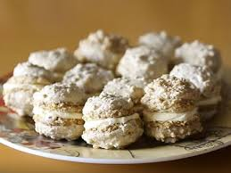

Potrebno je:
Belanca sa malo soli umutiti u čvrst sneg, te dodavati kašiku po kašiku šećer u prahu.
Ukupno vreme mućenja traje oko 10 minuta, odnosno dok se ne dobije lepa glatka i svilenkasta masa.
Umućenoj masi dodati 1 kašiku soka od limuna i mutiti još 1/2 do 1 minuta. Zatim dodavati kašiku po kašiku mlevenig oraha, mutiti varjačom i kada se prva kašika umuti dodati sledeću i to raditi sve dok se ne utroše svi orasi.
Tepsiju od rerne namazati margarinom i obložiti papirom za pečenje. Rernu uključiti na 150 stepeni da se ugreje.
U špric kesu sa zvezdastim vrhom sipati smesu od belanaca i oraha. Smesa je dosta gusta i jačim pritiskanjem kese uz kružne pokrete formirati male kolačiće u tepsiji.
Tepsiju sa kolačićima staviti u rernu peći 15-20 minuta (proveriti nakon 15 minuta, ako su još mekani nastaviti peći.
Kolačiće odmah nakon pečenja malo pomeriti sa mesta na kojem su se pekli ostaviti da se potpuno ohlade.
Kada se šećer otopi dodati kockice čokolade i varjačom mutiti na pari još 10 minuta. U ohlađenu kremu umutiti 50 g margarina.
Na kraju dodati krokant od oraha i dobro umutiti. Malom kašikom uzimati kremu i spajati po 2 kolačića i odlagati na tacnu.
Tacnu sa padobrancima odložiti u frižidar, da se krema malo stegne i ostaviti u frižideru preko noći. Narednog dana su padobranci malo omekšali.